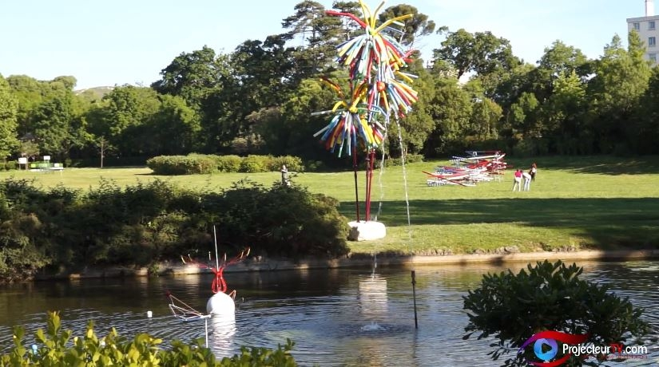

Le parc Borély qui s'étend sur 18 hectares (dont 1,2 hectares pour le jardin botanique) est le plus fréquenté des espaces verts marseillais. Il abrite une bastide du XVIIIe siècle, mise en valeur par un jardin "à la française" et un parc paysager du XIXe siècle. Le jardin garde l'empreinte de l'ingénieur et architecte Embry, intervenu sur le site en 1775. La juxtaposition du parc et du jardin "à la française" confère à Borély un charme supplémentaire. Ses allées sont très prisées des joggers et des promeneurs qui apprécient de flâner entre les massifs de la roseraie ou de découvrir les espèces rares du jardin botanique. Le plan d'eau, son embarcadère, sa buvette et son restaurant complètent les multiples attractions du site. Borély est aussi un paradis pour les enfants doté de deux aires de jeux et de nombreux espaces.

Protégé au titre des monuments historiques, le parc Longchamp s'est constitué au fil du temps, par la stratification des différents projets, imaginés ou réalisés sur le site, depuis le XIXe siècle. Le Jardin zoologique appartient au courant des jardins "pittoresques" ou "à l'anglaise" intégrant une nature reconstituée et faisant la part belle aux éléments de décor. On peut y observer un kiosque à musique, des fabriques orientalistes restaurées en 2013 (les pavillons de la girafe et de l'éléphant et les cages aux fauves ornées de céramiques turquoises), des éléments de rocaille (la cascade des phoques, la volière et la cage aux ours) et une cabane "rustique", autrefois occupée par des autruches. D'autres cages sont ornées de peintures naïves et comportent des grillages décorés et des maisonnettes en briques.

Situé en plein cœur de Marseille, le Parc du 26e centenaire s’étend sur 10,5 hectares. Il a été aménagé sur le site de l'ancienne gare du Prado. De conception très contemporaine, le parc s’inscrit cependant dans la mémoire commune, faisant référence aux vingt-six siècles d’histoire de la Ville. Certains vestiges conservés de la gare sont les témoins d’un passé encore vivant dans le souvenir de nombreux Marseillais. L’eau y est omniprésente et fait écho à "l’Arbre de l’Espérance" qui se dresse à l’entrée principale. Les jets d'eau ont été conçus comme des fontaines ornementales. Il ne s'agit donc pas d'aires de jeux (risques pour les enfants).

Le parc et sa bastide furent construits vers 1840, par le négociant Cohen. L'ensemble prit immédiatement le nom de Maison Blanche. En 1920, une famille suisse racheta la propriété et la transforma par la création d'un lac et l'ouverture de grandes baies en façade de la bastide. Le domaine fut vendu à la Ville par les descendants, en 1978. Il fut alors décidé de conserver au parc une vocation d'agrément, la bastide accueillant, quelques années plus tard, la mairie des 9e et 10e arrondissements. La plupart des arbres remarquables de ce site tels que magnolias, séquoias, cèdres, ifs, platanes, liquidambars et un orme de Sibérie datent de la première moitié du XIXe siècle.
